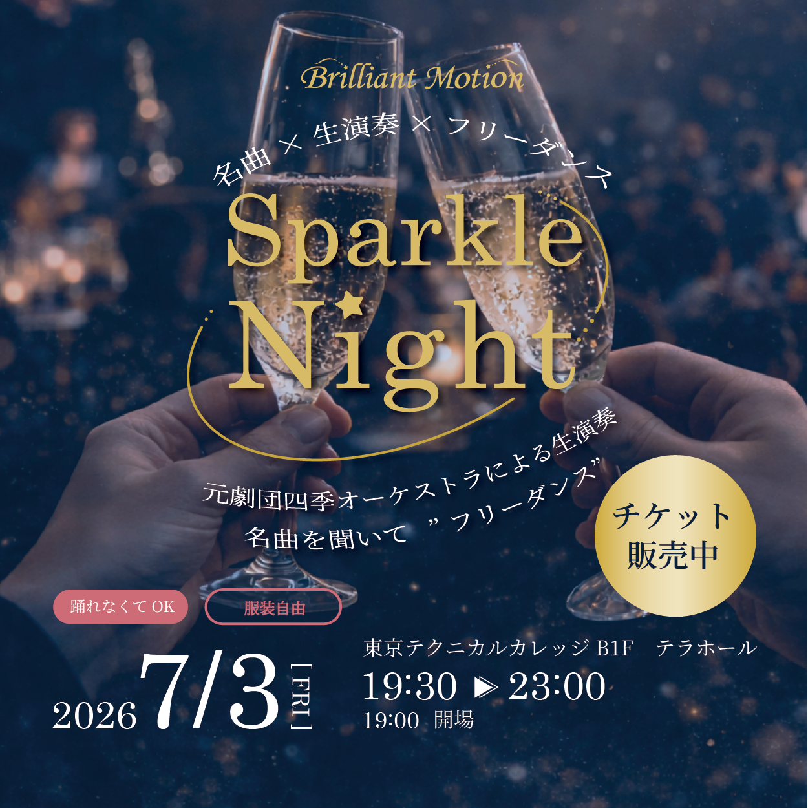

Kana Uchida’s portfolio


元劇団四季オーケストラメンバー演奏会「Sparkle Night」 バナー

元劇団四季オーケストラメンバーによる生演奏イベント「Sparkle Night」の告知バナーを制作しました。
「かわいすぎない、上品で華やかなデザイン」を軸に制作し、
シャンパンで乾杯するビジュアルを大きく配置することで、
イベントの世界観が直感的に伝わるよう設計しています。
ゴールドとネイビーを基調にすることで、
大人向けの落ち着きと特別感を表現しました。
また、イベント名・日時・会場・特徴（踊らなくてもOKなど）を
視線の流れに沿って整理し、
一目で内容が理解できる構成にしています。
スクエア版では情報を絞り、
視認性とインパクトを両立させています。
| バナー設置場所 | Instagram / Facebook |
|---|---|
| ターゲット | 40〜50才の女性 |
| イメージ | かわいすぎない、上品で華やかなイメージ |
| バナーサイズ | 1200×1200(スクエア)、1080×1920(ストーリーズ) |
| 画像 | 乾杯のイメージができる画像 |
| 制作時間 | ３時間 |
| 使用ツール |
制作意図・工夫した点
■ 課題
イベントの魅力を一目で伝えつつ、大人向けの上品な世界観を表現すること
■ 工夫した点
ターゲット層に合わせて「かわいすぎない、上品で華やかなデザイン」を軸に設計しました。
ゴールドとネイビーを基調にすることで、高級感と特別感を演出しています。
■ 苦労した点
情報量が多く、視線誘導が崩れやすかった点
■ 解決方法
情報の優先順位を整理し、「イベント名 → 日時 → 特徴 → 行動」の流れで配置することで、
直感的に理解できる構成にしました。
使用スキル
デザイン設計
Photoshop
Illustrator
情報設計（UI）